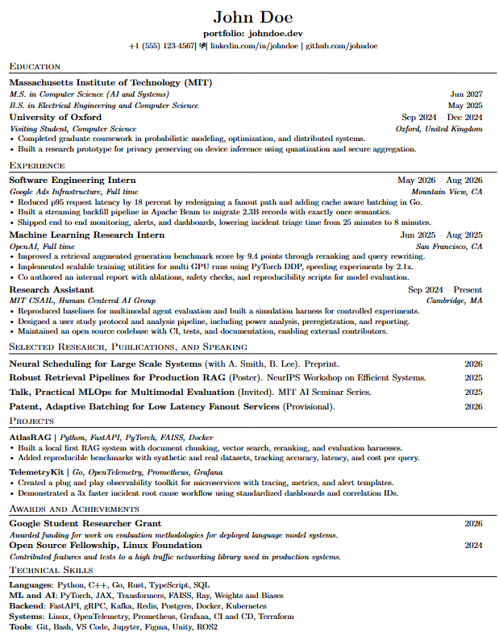

ijtiOverleaf.
ATS-friendly LaTeX resume template.
- 01 /Copy the template below
- 02 /Paste into a new Overleaf project
- 03 /Edit the "EDIT THESE" block (lines 110–118)
- 04 /Toggle sections on / off at lines 21–23
- 05 /Recompile
ATS-friendly LaTeX resume template.
Preview /
